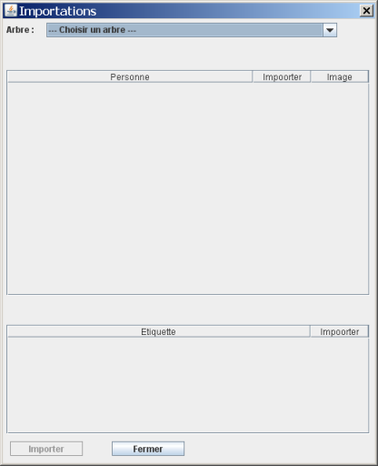
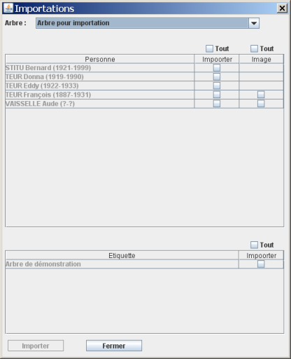

Appel de la fonction - Choisirir un arbre - Importation
L'importation vous permet de recopier des éléments d'un arbre vers l'arbre courant. Ces éléments sont des personnes et/ou des étiquettes libres.
Quand vous appelez cette fonction, une fenêtre vous permet de choisir les éléments à importer :

Le menu déroulant, en haut de la page, vous permet de choisir l'arbre à partir duquel vous allez recopier des éléments.

Quand vous avez choisi un arbre, vous disposez de la liste des personnes qui y figurent ainsi que de la liste des étiquettes. Pour les étiquettes, vous voyez le début du texte qu'elles contiennent.
Pour les personnes, vous pouvez choisir d'importer les images ou pas. La case à cocher pour ce choix n'apparaît que quand vous avez lié une ou plusieurs images à cette personne.
Les cases à cocher permettent de sélectionner ou désélectionner toute la colonne correspondante.
Quand vous cliquez sur le bouton Importer, les objets sélectionnés sont recopiés dans l'arbre courant. Ils sont placés au même endroit que dans l'arbre d'origine. Les personnes ont le même modèle d'étiquette que celui d'origine.